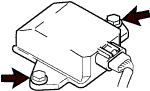

ヨーレート センサ（VSC付） 取り外し |
| 1. リヤシートバックASSY取りはずし（リヤシート一体可倒式） |
| 2. リヤシートクッションASSY取りはずし（リヤシート一体可倒式） |
| 3. リヤシートバック ヒンジSUB-ASSY RH取りはずし（リヤシート一体可倒式） |
| 4. リヤシートバック ヒンジSUB-ASSY LH取りはずし（リヤシート一体可倒式） |
| 5. リヤシートバックASSY RH取りはずし（リヤシート分割可倒式） |
| 6. リヤシートバックASSY LH取りはずし（リヤシート分割可倒式） |
| 7. リヤシートクッションASSY取りはずし（リヤシート分割可倒式） |
| 8. フロントシートASSY RH取りはずし |
| 9. フロントドアスカッフ プレート RH取りはずし |
| 10. カウルサイドトリム ボード RH取りはずし |
| 11. フロントドア オープニングトリム ウェザストリップ RH取りはずし |
| 12. リヤシート 3ポイントタイプ ベルトASSY OUT RH取りはずし（フロアアンカ部） |
| 13. ラップベルト アウタアンカ カバー取りはずし |
| 14. フロントシート アウタベルトASSY RH取りはずし（フロアアンカ部） |
| 15. サイドNO.1 トリムASSY RH取りはずし |
| 16. インストルメントパネルフィニッシュ パネル LWR CTR取りはずし |
| 17. フロントフロア カーペットASSY FR取りはずし |
| 18. フロア ボード NO.1取りはずし |
| 19. ヨーレート センサ取りはずし |
コネクタをヨーレートセンサから切り離す。
|  |
ボルト2本をはずし、ヨーレートセンサを取りはずす。